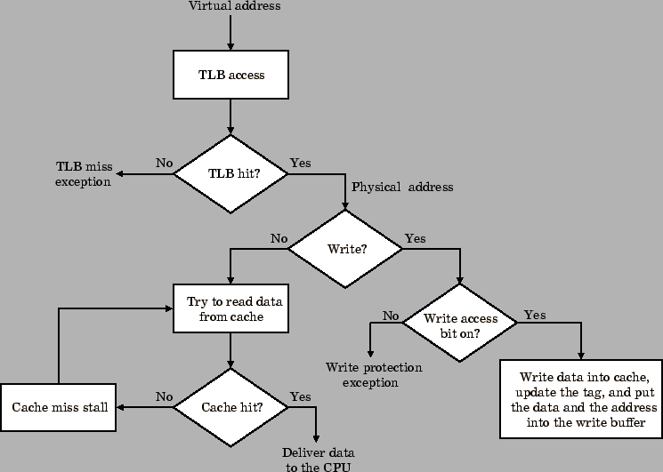

เนื่องจากการทำงานของระบบหน่วยความจำเสมือน และแคชเป็นแบบระดับขั้น ดังนั้นข้อมูลจะปรากฏอยู่ในแคชไม่ได้ ถ้าข้อมูลนั้นไม่มีอยู่ในหน่วยความจำหลัก ระบบปฏิบัติการจะเป็นผู้ดำเนินการกับระบบหน่วยความจำที่เป็นลำดับขั้นนี้ แคชที่ใช้ตำแหน่งอ้างอิงเสมือน (Virtual Addressed Cache) คือแคชที่ถูกเรียกใช้ได้ด้วยตำแหน่งอ้างอิงเสมือน ซึ่งจะทำให้ TLB ไม่ถูกใช้งานมากจนเกินไป และลดเวลาที่เสียไปในแคช เนื่องจาก TLB จะไม่ถูกใช้จนกว่าแคชจะถูกเรียกใช้โดยปกติ แต่อาจทำให้เกิดเหตุการณ์ที่เพจเดียวมีตำแหน่งอ้างอิงเสมือนสองตำแหน่ง และจะทำให้เกิดปัญหาในการเขียนข้อมูล แคชที่ใช้ตำแหน่งอ้างอิงเสมือนที่สมบูรณ์มักจะถูกออกแบบให้มีแคชและ TLB ที่จำกัด เพื่อลดเหตุการณ์ดังกล่าว หรืออาจจะให้ระบบปฏิบัติการเข้ามาดำเนินการ แสดงแผนภูมิในรูป 7.18
|

|